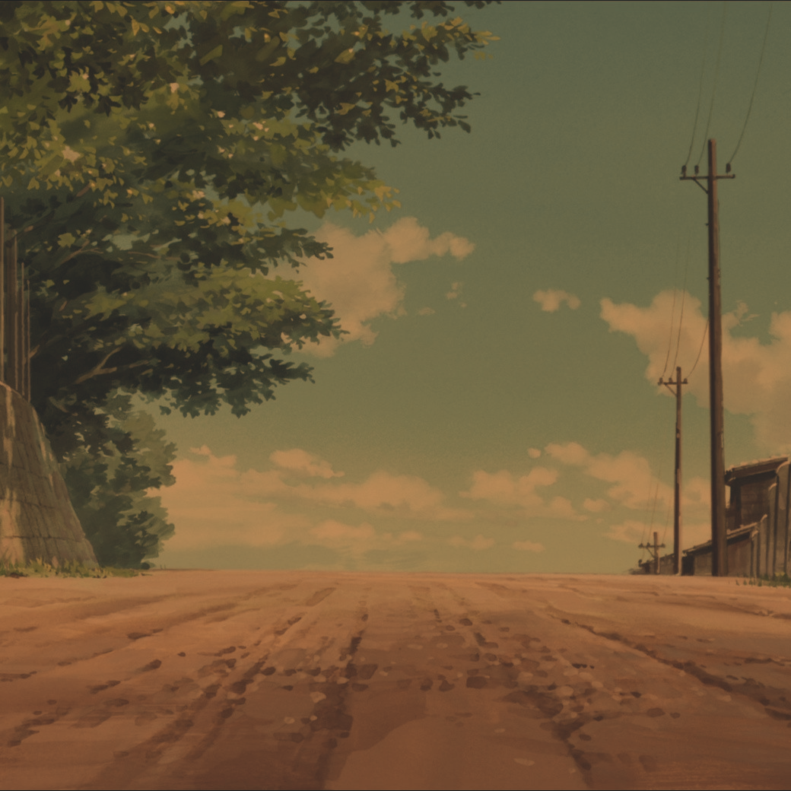

This page contains some of the projects I've worked on over the years. Many of them are certainly not in a useable or useful state, but I feel like putting them here nonetheless.
Personal Projects

Startpage
A custom gruvbox startpage I use!

Personal Page
A Wikipedia-inspired about page!
Linux Styling
A gruvbox Linux styling!
CSP
A PyQt6 application for practicing Chinese!
Test Creator
A project I did to learn web development.
ifman
A package manager for IF games.
Holiday Puzzles
A sudoku and crossword I made for my family.
Credit Risk
A credit risk calculator I made for fun.
School Projects
C2521: MPM
An MPM implementation in Python using NVIDIA Warp.
C2231: QuACK
VQE implemented with a custom CPU/GPU-optimized quantum simulator.
C2552: Unions
A computational analysis of rhetorics surrounding unions in news media.

M1510: MI in OL
An analysis of how mutual information changes in online learning.